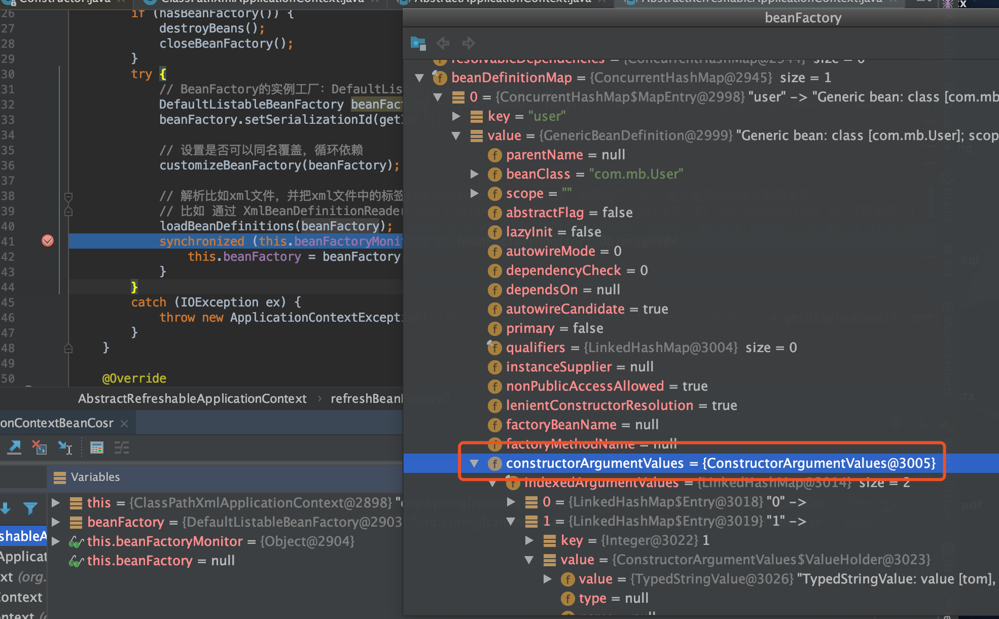
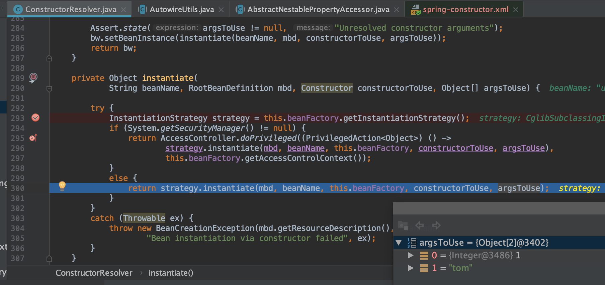
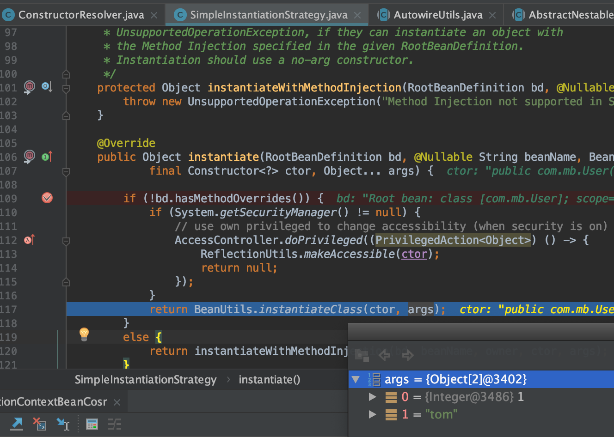

TreeviewCopyright @doctording all right reserved, powered by aleen42
bean & constructor-arg
- 主要说下跟默认构造函数构造bean的区别之处
测试代码&xml
- code
见：spring-framework-5.1.3.RELEASE/spring-context/src/test/java/test/com/mb/BeanTest.java
@Test
public void testClassPathXmlApplicationContextBean() {
ClassPathXmlApplicationContext applicationContext =
new ClassPathXmlApplicationContext("spring.xml");
User user = (User) applicationContext.getBean("user");
Assert.assertTrue(user != null);
Assert.assertTrue(user.getTestStr().equals("testStr"));
}
- spring.xml
<?xml version="1.0" encoding="UTF-8"?>
<beans xmlns="http://www.springframework.org/schema/beans"
xmlns:xsi="http://www.w3.org/2001/XMLSchema-instance"
xsi:schemaLocation="http://www.springframework.org/schema/beans https://www.springframework.org/schema/beans/spring-beans-3.0.xsd">
<bean id="user" class="com.mb.User">
<constructor-arg index="0" value="1"/>
<constructor-arg index="1" value="tom"/>
</bean>
</beans>
流程关键点说明
构造BeanFactory(loadBeanDefinitions(beanFactory)会加载好构造参数)

doGetBean方法读取BeanDefinition会读取到构造参数

在构造的时候会根据beanDefinition选择构造方法

最后使用BeanUtils实例化的时候会带上参数

